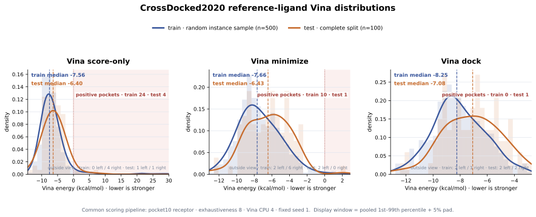

Test performance on lp_edrscc_v2 for the supervised and pretrained baselines,
Nesso-1, and the frozen density probes. Bars show the mean over three seeds and whiskers show
±1 standard deviation; higher Pearson r / Spearman ρ and lower RMSE are better.
Figure 1 · Test Pearson r, Spearman ρ, and RMSE on lp_edrscc_v2.
The best clean result is bold and the second-best clean result is underlined within each panel.
Nesso-1 is faded bars denoting a leaked ceiling: its affinity-training data overlap completely to the test set.
Leakage check.
Nesso-1: r 0.670, ρ 0.663, RMSE 1.410; treat as a leaked ceiling because its
affinity training overlaps the full test set.
Deliberate probe leakage: CDG changes from r 0.663 / ρ 0.644 / RMSE 1.334 to
0.713 / 0.687 / 1.273. Only the MLP saw test labels; encoder pretraining stayed clean.
1.3mFo–DFc channels
Three completed trials add mFo–DFc density and gradient-magnitude channels to C+D+G.
The encoder, data, mask, and frozen-probe protocol are matched.
Figure 4 · mFo–DFc channel trials.
Bars are three-seed means. Base is the C+D+G champion; higher r/ρ and lower RMSE are better.
Δρ is reported in Table 3.
Table 3 · mFo–DFc channel trials
Mean over three seeds. Δρ is versus the C+D+G champion.
Trial
Test r↑
Test ρ↑
RMSE↓
Δρ
Champion (baseline)
0.660
0.644
1.349
0.000
Trial 1
0.628
0.611
1.431
−0.033
Trial 2
0.633
0.618
1.431
−0.026
Trial 3
0.600
0.588
1.477
−0.056
Trial details.
Shared: 100M ChannelViT, PLINDER v2 112K, mask 0.75, 50 epochs,
epoch-49 probe, and split 3850 / 817 / 1320.
Champion: C+D+G input, 13 channels [7,4,2]; no mFo–DFc channels.
Trials 1–3: add mFo–DFc density and gradient channels; 15 channels
[7,4,2,2].
Trial 1: reconstruct both added channels at weight 0.1 each.
Trial 2: use mFo–DFc as input only; reconstruction weights are 0.
Trial 3: reconstruct both mFo–DFc channels at weight 0.3 each.
Result. Trial 2 is the best addition at ρ 0.618, but all three are below
the C+D+G control at 0.644. The added difference-map channels did not improve affinity.
BAppendix B — evaluation-pipeline check
Small matched trial: keep pocket10 for generation, but compare pocket10 versus the aligned whole
receptor for Vina. Use the same ligands, site box, pocket mask, and Vina settings.
Table B1 · Evaluation pipeline before and fixed — pending
VoxBind original baselinematched samples · same pocket mask
—
—
—
pending
—
—
—
pending
Ours — frozen C+D+G oursmatched samples · same pocket mask
—
—
—
pending
—
—
—
pending
Guardrail. Record receptor scope and box. Require aligned coordinates; never
fall back to pocket10 for a fixed-pipeline result.
AAppendix — de novo generation with two outlier pockets excluded
Crop-scored diagnostic on 77 retained pockets, with 100 ligands per pocket. Aggregate within
pocket first. The whole-receptor check is in Appendix B.
Quality-controlled set
77 / 79
97.5% retained · one shared pocket mask
Ours · Dock average
−8.26
best of the three generated runs
Dock vs. best vanilla
−0.25
kcal/mol vs. VoxBind σ 0.9
Success rate · DecompDiff
Q ∩ S ∩ V
QED > 0.25 · SA > 0.59 · Dock < −8.18
Table A1 · Quality-controlled de novo results
pocket10 receptor
Reference = redocked crystal ligand on the same retained pockets. High aff. = percentage of generated
ligands with a lower Vina Dock score than that pocket’s reference. Success = joint percentage with
QED > 0.25, SA > 0.59, and Vina Dock < −8.18 kcal/mol, following
DecompDiff. Avg / Med are across pockets.
Method · 77 pockets
Dock↓ Avg
Dock↓ Med
Min↓ Avg
Min↓ Med
Score↓ Avg
Score↓ Med
High aff↑ Avg
High aff↑ Med
QED↑
SA↑
Success↑
Div↑
Reference crystalredocked crystal ligand · shared QC set
Crop-only diagnostic. On the shared 77-pocket set, the frozen-encoder generator is strongest on all
six Vina summaries. Relative to the better vanilla Dock average (σ 0.9), it improves Dock by
0.25 kcal/mol, Min by 0.31 kcal/mol, and Score by 0.13 kcal/mol; the median
high-affinity rate increases by 6.5 percentage points. The trade-off is lower QED
(0.52 vs. 0.56) and diversity (0.71 vs. 0.74).
Success-rate values remain pending: this metric is a per-molecule intersection and cannot be
reconstructed from the marginal QED, SA, and Dock averages. The joint evaluation records are not
retained in the cleaned workspace, and no new Vina run was launched.
A.1A concrete pocket-exclusion standard
Outlier detection is based only on the redocked reference ligand’s Vina score-only value,
which diagnoses pocket/receptor preparation before any generated molecule is inspected. We use the
conventional one-sided modified Z-score cutoff of 3.5, together with a positive-energy gate.
This is resistant to the extreme value it is designed to detect because both its center and scale use medians.
The values below document the current pocket10 audit; apply the identical rule to whole-receptor
reference scores before freezing the primary evaluation mask.
Reference-only robust rule
Mi = 0.6745 · (si − median(s)) / MAD(s)
Exclude when Mi > 3.5 AND si > 0 kcal/mol
Score the crystallographic reference pose once with the same receptor and Vina
score_only setup used by every run.
Estimate center and scale across pockets: median = −5.94 and MAD = 2.31 kcal/mol
for the 79-pocket density subset.
Apply the dual gate. Require both a robust upper-tail outlier and a physically
unfavorable positive score. Here the robust condition is stricter, so the rule is equivalent to
reference score > +6.05 kcal/mol.
Freeze the resulting pocket mask and apply it unchanged to the reference and every
generated method. Do not remove individual generated molecules.
Decision audit · upper tail of the reference distribution
cutoff +6.05 · M = 3.5
−1601020304050
exclude
target_92
+52.32
modified Z = 17.01
exclude
target_58
+7.24
modified Z = 3.85
keep
target_91
+3.26
modified Z = 2.69
keep
target_87
+0.80
modified Z = 1.97
Model-independent
The exclusion variable comes from the crystal reference, not from Ours or either VoxBind baseline.
One mask for all methods
A pocket cannot be kept for one method and dropped for another; all 77-pocket rows use the same IDs.
Full-set sensitivity retained
The unfiltered 79-pocket table remains part of the record so readers can see exactly what filtering changes.
A.2Sensitivity to the QC mask
The exclusion primarily corrects score-only and local-minimization summaries, which are directly
contaminated by the clashing input poses. Fully redocked Dock averages move by at most
0.03 kcal/mol, and the method ordering is unchanged.
Method
Dock Avg↓
Min Avg↓
Score Avg↓
79
QC 77
Δ
79
QC 77
Δ
79
QC 77
Δ
VoxBind σ 0.9
−7.98
−8.01
−0.03
−6.84
−7.28
−0.44
−5.26
−6.62
−1.36
VoxBind σ 1.0
−7.80
−7.83
−0.03
−6.76
−7.15
−0.39
−5.35
−6.53
−1.18
Ours — frozen C+D+G
−8.24
−8.26
−0.02
−7.09
−7.59
−0.50
−5.51
−6.75
−1.24
Reporting specification.
Primary estimand: equal-weight mean across the 77 retained pockets, after computing each
pocket’s metric from its valid generated molecules.
Success rate: for each pocket, compute
mean(QED > 0.25 AND SA > 0.59 AND Vina Dock < −8.18) over molecules with all
three finite values, then average the pocket rates equally across the QC 77 set. The inequalities
are strict, matching DecompDiff.
Directionality: the outlier rule is one-sided because abnormally high positive
score_only values are the pocket-preparation failure mode; unusually favorable negative
values are not treated as failures.
Finite-score guard: a pocket whose reference cannot be scored is a separate reference-QC
failure and must be listed explicitly. All 79 reference scores used here were finite.
Excluded pockets:target_92 (CHIB_SERMA / 4z2g) and
target_58 (NPD_THEMA / 3pdh). The next-highest reference score,
target_91, remains below the robust cutoff.
B.1CrossDocked pocket10 score audit
Crop-only diagnostic: all 100 test instances and a seeded sample of 500 from 99,881 training
instances. No score or pocket was removed.

Figure B1 · CrossDocked2020 reference-ligand energy distributions.
Solid curves and translucent histograms show normalized density; dashed vertical lines show
split medians. Each panel uses a pooled central 1st–99th percentile display window, with every
observation outside that window counted in the panel annotation rather than silently discarded.
Lower, more negative Vina energy is more favorable.
Table B2 · Vina distribution summary
pocket10 receptor
All values are in kcal/mol. Test rows cover the full test split; train rows summarize the
deterministic 500-instance sample. “Positive” means Vina energy > 0 kcal/mol.
Vina stage
Split
n
Minimum
Maximum
Average
Median
Positive pockets
Score-only
Train · sampled
500
−13.442
+53.872
−6.280
−7.557
24 · 4.8%
Test · complete
100
−15.541
+52.319
−5.644
−6.400
4 · 4.0%
Minimized
Train · sampled
500
−14.106
+46.688
−7.145
−7.665
10 · 2.0%
Test · complete
100
−15.516
+2.015
−6.546
−6.434
1 · 1.0%
Docked
Train · sampled
500
−14.383
−1.718
−8.090
−8.247
0 · 0.0%
Test · complete
100
−15.876
+2.048
−7.206
−7.077
1 · 1.0%
Scope. Test: 100 / 100. Train: 500 / 99,881, sampled with seed 260730.
Pocket10 receptor; exhaustiveness 8; Vina seed 1; four CPUs. All tails are retained.
Positive Vina pockets · full test split (highlighted)
Five unique test pockets have at least one positive stage; CHIB_SERMA / 4z2g is positive at
both score-only and minimization. The red region in each distribution panel marks energy
above zero. Open the pocket-level positive-score CSV.
Stage
Test index
Protein family
Pocket
Vina
Score-only
92
CHIB_SERMA
4z2g
+52.319
Score-only
58
NPD_THEMA
3pdh
+7.243
Score-only
91
CHIB_SERMA
1h0i
+3.256
Score-only
87
CDK6_HUMAN
4aua
+0.800
Minimized
92
CHIB_SERMA
4z2g
+2.015
Docked
61
PA2B8_DABRR
2gns
+2.048
1.1MLP-head trials
Same frozen champion features and lp_edrscc_v2 split; only the probe head changes.
Figure 2 · MLP-head trials.
Base is the canonical C+D+G champion. Higher r/ρ and lower RMSE are better.
Table 1 · MLP-head trials
Mean over three seeds. Δρ is versus the canonical C+D+G champion.
Trial
Test r↑
Test ρ↑
RMSE↓
Δρ
Champion (baseline)
0.660
0.644
1.349
0.000
Trial 1
0.650
0.634
1.391
−0.010
Trial 2
0.645
0.625
1.508
−0.019
Trial 3
—
—
—
—
Trial details.
Shared: frozen 100M v2 mask0.75 encoder, split 3850 / 817 / 1320, three probe seeds.
Champion: canonical C+D+G score; mean-pool all tokens → 2-layer MLP; dim 640.
Check: the head-design harness reproduced the baseline at ρ 0.641; the table uses
the canonical 0.644 baseline consistently across Sections 1.1–1.3.
Trial 1: concatenate ligand and pocket pools; feature dim 1280.
Trial 2: add product and absolute-difference interactions; feature dim 2560.
Trial 3: cross-attention pooling; deprioritized after larger heads overfit.
Result. Mean-pool MLP remains best: ρ 0.644 versus 0.634 for concat and
0.625 for bilinear. Larger interaction heads overfit; cross-attention is deprioritized.
1.2Loss terms
Same frozen champion encoder, features, and mean-pool MLP — only the probe-head training
loss changes (early stop stays on val ρ). We add a ranking/correlation term to the MSE
base, following affinity-model precedent: Pearson-correlation auxiliary (GenScore,
Chem. Sci. 2023), pairwise RankNet (MBP, arXiv:2306.04886),
Huber + Pearson (S1+P DTA, arXiv:2407.15202), and GAR pairwise-gap
alignment (ICML 2025). MSE + Pearson wins; tuned to weight λ = 5
it is the new C+D+G champion — same ranking as the MSE head with a lower RMSE, at no encoder cost.
Figure 3 · Loss-term trials (v2 test, 3 seeds).
Base = matched MSE champion. T1 = MSE + Pearson, T2 = MSE + RankNet, T3 = MSE + GAR,
T4 = Huber + Pearson (all auxiliary-weight 3). T1 (navy) is best on r, ρ, and RMSE.
Table 2 · Probe-head loss terms — v2 test (3 seeds)
Auxiliary-term weight 3; metrics are means over three seeds. Δρ is versus the MSE champion.
Best clean value per column in bold.
Tuning the Pearson term's weight on Trial 1. Inverted-U with a sweet spot at λ ≈ 3–5;
λ = 5 is adopted as the new champion — best RMSE (1.325, −0.024 vs MSE) with ranking
tied to λ = 3. Best value per column in bold.
λ (aux weight)
Test r↑
Test ρ↑
RMSE↓
0 · MSE
0.660
0.644
1.349
0.5
0.659
0.643
1.341
1
0.660
0.645
1.350
2
0.664
0.647
1.352
3
0.665
0.648
1.342
5 · champion
0.665
0.647
1.325
10
0.662
0.645
1.353
Trial details.
Shared: frozen champion features, mean-pool MLP, identical split and optimization.
Result. Adding a ranking/correlation term to the frozen-probe loss gives a
small but consistent gain — Trial 1 (MSE + Pearson) is best, lifting r and ρ ≈ +0.003–0.004
while also lowering RMSE. Correlation/gap terms improve RMSE; the pure-ranking RankNet term does
not. Tuning the Pearson weight (Table 2b) peaks at λ = 5: r 0.665 / ρ 0.647 / RMSE 1.325 —
ranking tied to the MSE head but RMSE −0.024. Adopted as the new C+D+G champion (encoder unchanged;
CASF and %within tables therefore keep the MSE-head values).